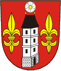

František Zeman
Zpěvák melodických českých písní plných emocí, autor alb Otevřená srdce a Kluci ze Šťastné planety. Na pódiu s kapelou zkušených muzikantů.
Benefiční festival na rozloučenou s létem
s Charitou Třeboň
Léto doznívá, hudba zůstává
Dozvuky prázdnin jsou rodinné setkání pod širým nebem, kde se loučíme s létem hudbou. A protože dobré věci mají mít dlouhý dozvuk, celý výtěžek festivalu putuje Charitě Třeboň, na pomoc lidem v našem regionu.
Line-up 2027
Zpěvák melodických českých písní plných emocí, autor alb Otevřená srdce a Kluci ze Šťastné planety. Na pódiu s kapelou zkušených muzikantů.
Domlouváme, brzy prozradíme.
Domlouváme, brzy prozradíme.
Připravujeme.
Výtěžek pro Charitu Třeboň
Každá písnička má dozvuk. Tahle i v životech lidí, kterým Charita Třeboň pomáhá.
Charita Třeboň poskytuje sociální a zdravotní služby lidem v třeboňském regionu a provází je v nemoci, ve stáří i v těžkých životních situacích. Celý výtěžek festivalu jde na její práci.
Na co se připravit
Časový program zveřejníme s předstihem.
Odpoledne a večer pod širým nebem pro malé i velké.

Pod záštitou
Akce se koná pod záštitou města Lomnice nad Lužnicí. Děkujeme panu starostovi Petru Krejníkovi a celému vedení města za dlouhodobou podporu a přízeň.
Časté dotazy
V sobotu 18. září 2027 v areálu Farská louka, Zámecká 627, Lomnice nad Lužnicí. Přesný časový program zveřejníme s předstihem.
Prvním potvrzeným interpretem je zpěvák František Zeman. Další jména právě domlouváme a postupně je oznámíme.
Celý výtěžek festivalu podpoří Charitu Třeboň a její sociální a zdravotní služby pro lidi v regionu.
Areál Farská louka leží v centru Lomnice nad Lužnicí, mezi Třeboní a Veselím nad Lužnicí. Přijet lze autem i vlakem. Podrobnosti najdete na stránce Místo & doprava.
Program, další interprety a praktické informace průběžně doplňujeme přímo tady na webu. Stačí se sem čas od času vrátit.